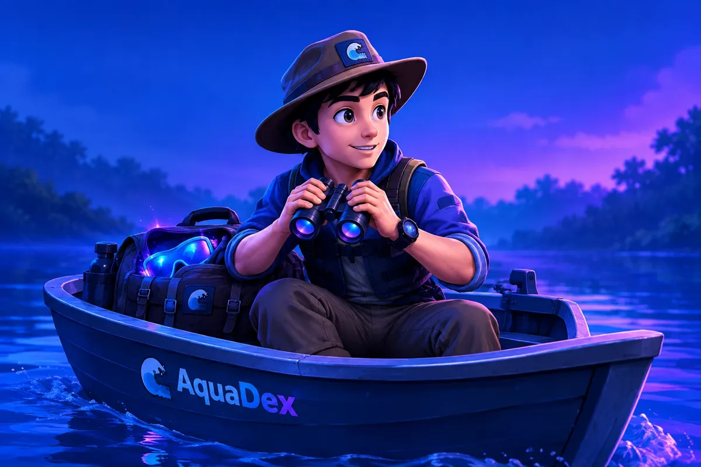

AquaDex 🌊
Explore • Descubra • Aprenda
🚣 Explorador dos rios

🐠
Vamos explorar!
Seu companheiro de aventuras está pronto para descobrir peixes do Brasil.
🌊 Comece sua aventura
0peixes
0biomas
0medalhas
🐠 Dica do AquaDex
Tire fotos com boa luz e não toque em animais desconhecidos.
📷 Tirar foto
Fotografe um peixe
🐟
Sua foto aparecerá aqui
💡 Tente fotografar de perto, mas sem chegar perto demais do animal.
🐟 Resultado
● Identificado!
Peixe descoberto
Curiosidades
Identifique um peixe para ver as curiosidades aqui.
📍 Localização
Identifique um peixe para ver onde ele vive.
🌊 Habitat
O habitat do peixe aparecerá aqui.
🗺️ Mapa
Mapa de habitat
🗺️Identifique um peixe para ver no mapa os biomas onde ele vive.
🌊 Onde vive?
Selecione um peixe identificado para ver informações sobre seu habitat.
📖 Meu álbum
Suas descobertas
⭐ 0 de 20 peixes descobertos
⚙️ Configurações
🔊 SomO AquaDex lê a ficha em voz alta
🐟 Peixinhos nadandoOs peixinhos do fundo da tela
🌙 Tema escuroDesligado = oceano claro
🐠 Mascote AquaDexO peixinho na imagem do início
🗑️ Apagar o álbumComeça a coleção do zero (neste aparelho)
ℹ️ Sobre o AquaDex
Um aplicativo para aprender sobre peixes de um jeito divertido. Feito por Maria, Mateus e Raul. 🐠